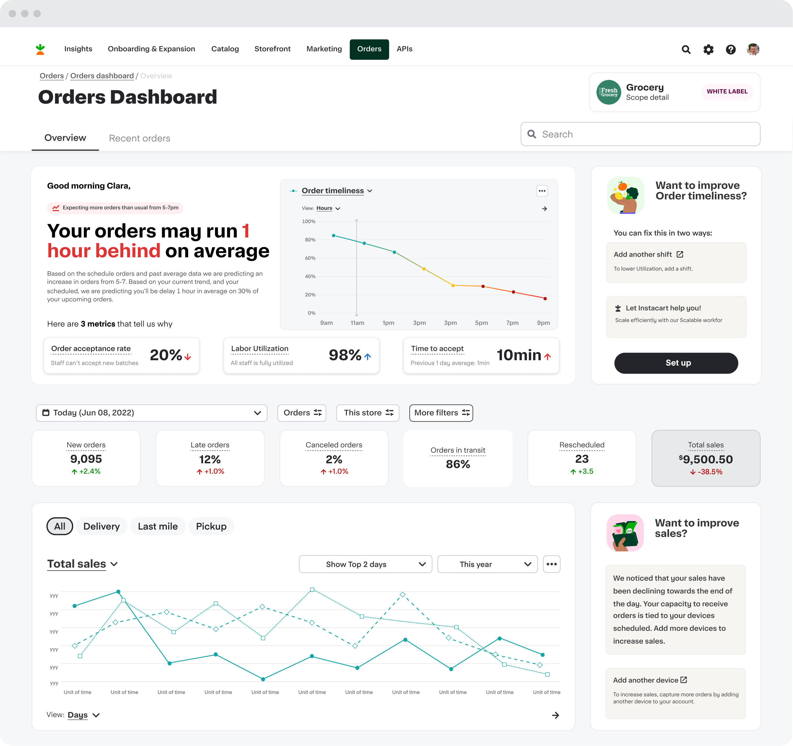
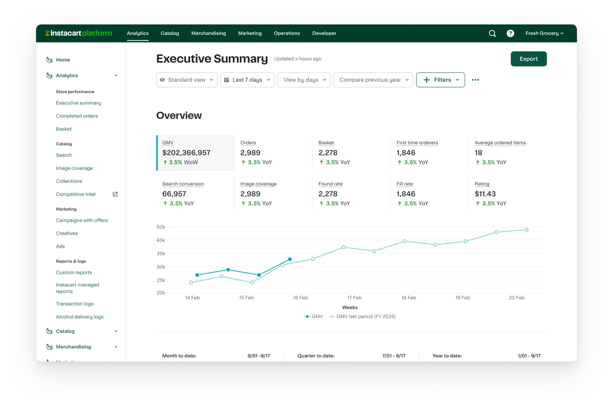
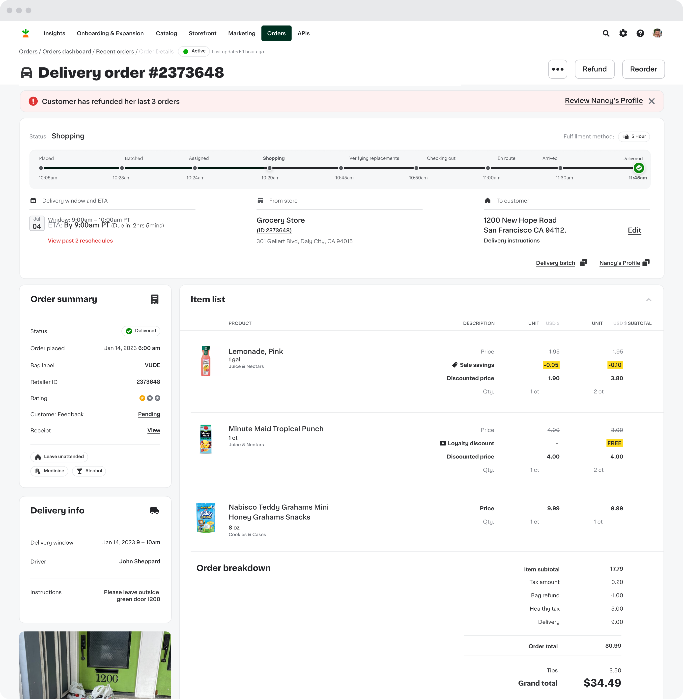
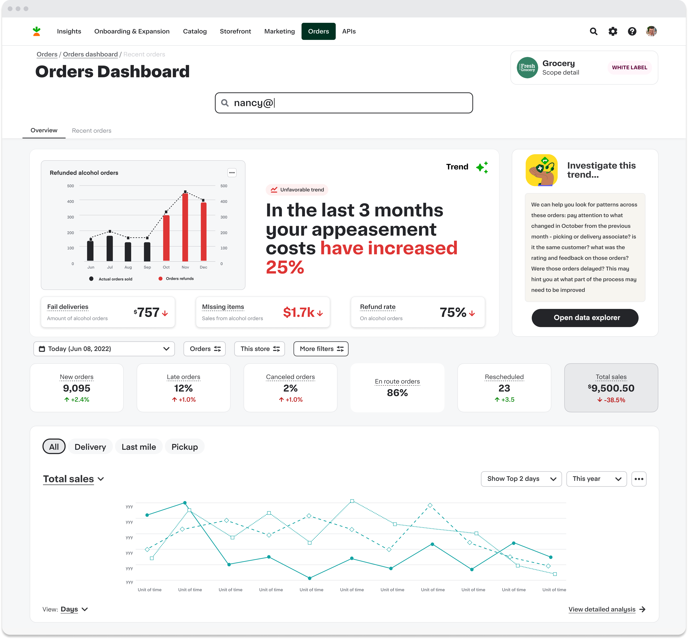
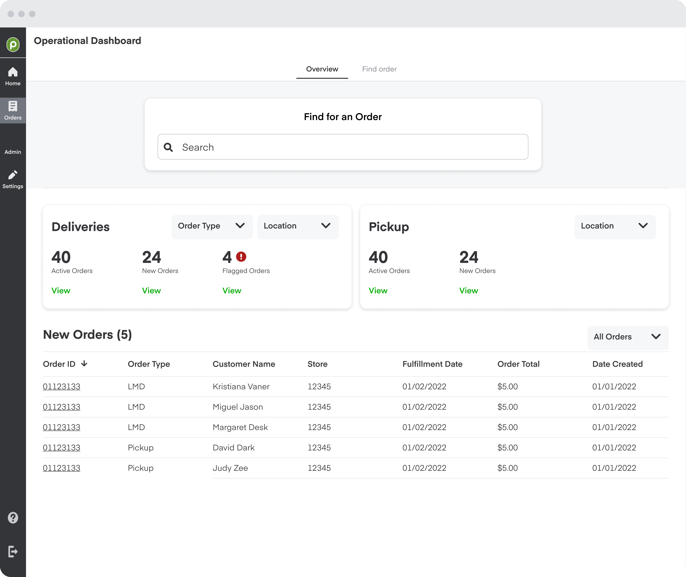
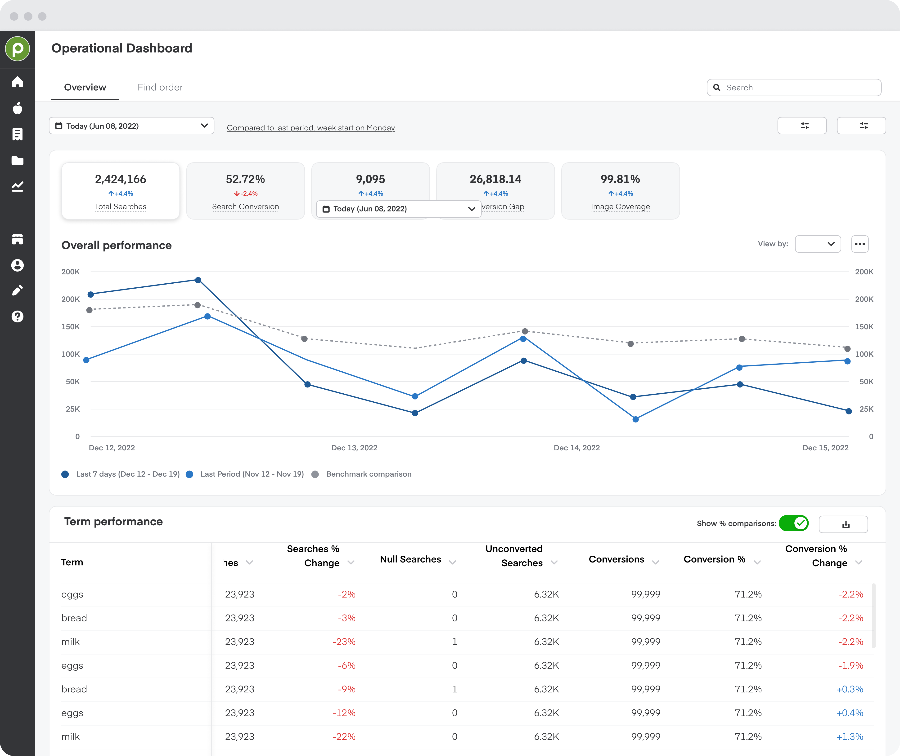
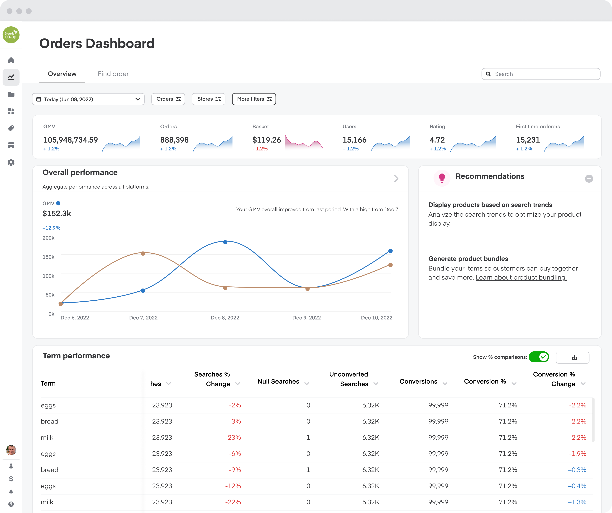
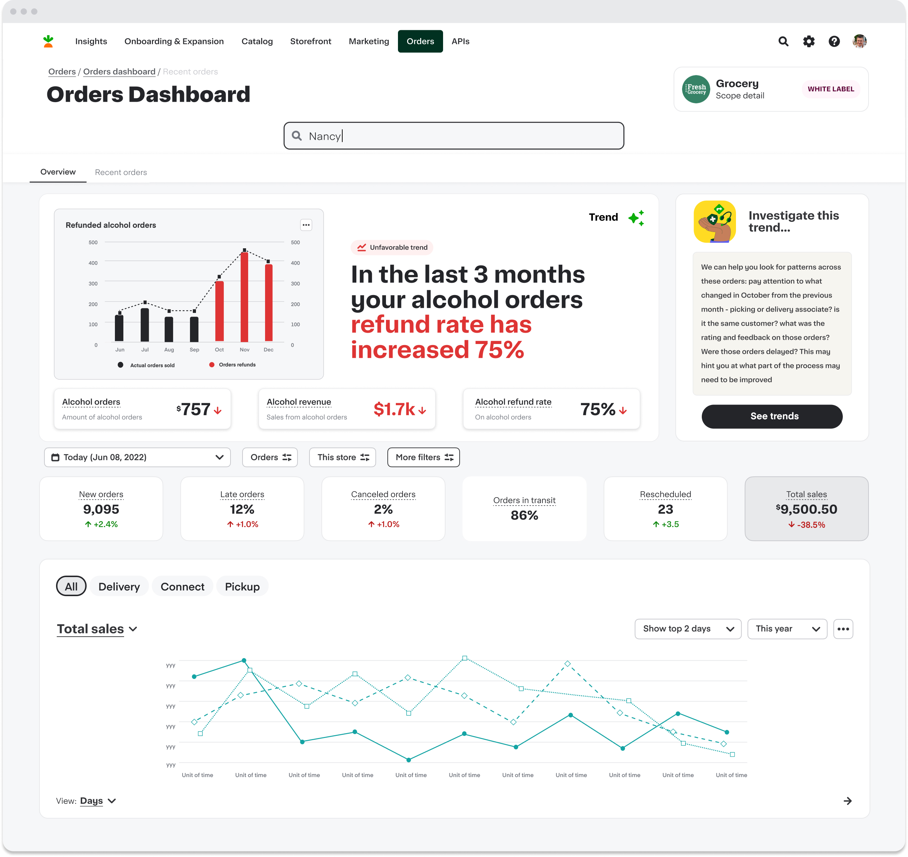
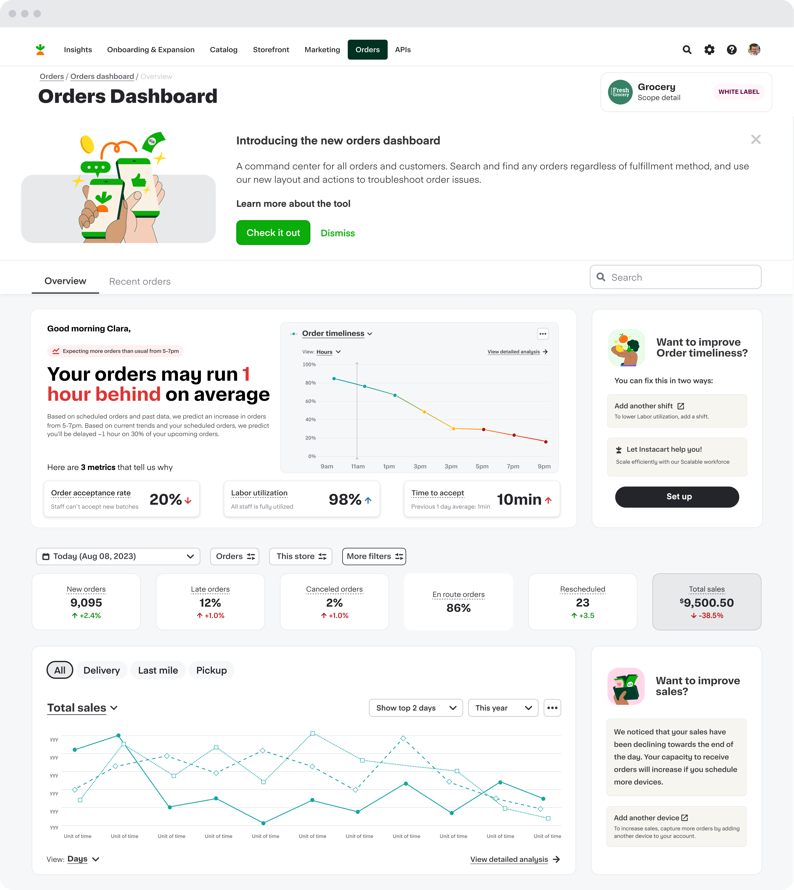

Orders
Dashboard
Rebuilding Order Support — from Overload to Clarity
A redesigned dashboard that reduced CX handling time by 40% in just two months.

One platform,
every retailer workflow.
The Orders Dashboard lives inside the Instacart Partner Platform (IPP) — the tool retailers use to run their business on Instacart.
Configure online & physical stores
Manage catalog & operations
Support their customers
This project lives here
The business on the other side
of these tools
These aren't internal tools nobody sees. Every retailer doing business on Instacart runs through this platform.
From SMB to enterprise grocers
Moved through the platform, lifetime
By early 2026, across North America
What four fragmented tools
were costing us
CX came to me with four fragmented support tools. I reframed the goal: give retailers the power to act, cut escalations to CX, and give the business visibility into what support was costing.
Building one source of truth
Agents rebuilt the same context across four tools every call, and search was unreliable across all of them.
Build one unified dashboard. I gave up the faster path of patching the existing tools, and phased delivery to manage the bigger build.
The foundation of the product, and a tool sales could put in front of retailers.

Giving retailers the power to act
Retailer support could barely see an order and could not act on it, so every real issue escalated to CX.
Give them cancel, refund, reschedule, and reorder. I gave up the safety of read-only, and bought it back with permissioning and guardrails.

Different views for different roles
I started table-first. But managers did not need the table. They needed to catch problems before they became losses.
Role-based views. Agents keep the table; managers get insights and metrics. I gave up one view for everyone.
The product’s identity, plus two new surfaces: cost-control metrics and in-line upsell.

Shaping the design



Phased delivery for continuous impact
Measurable results in just two months
in 2 months
consolidated

What we learned
Ship in phases, not perfection
Early shipping → real feedback loop
Bring content & research early
Cross-functional input → better mental models
Balance usability with accuracy
Tested every shortcut → zero regression in accuracy
Make complexity
actionable
Introducing the new Orders Dashboard — a command center for all orders and customers.
Search and find any order regardless of fulfillment method, and use the new layout and actions to troubleshoot and solve order issues with confidence.

Questions
dariofidanza.com